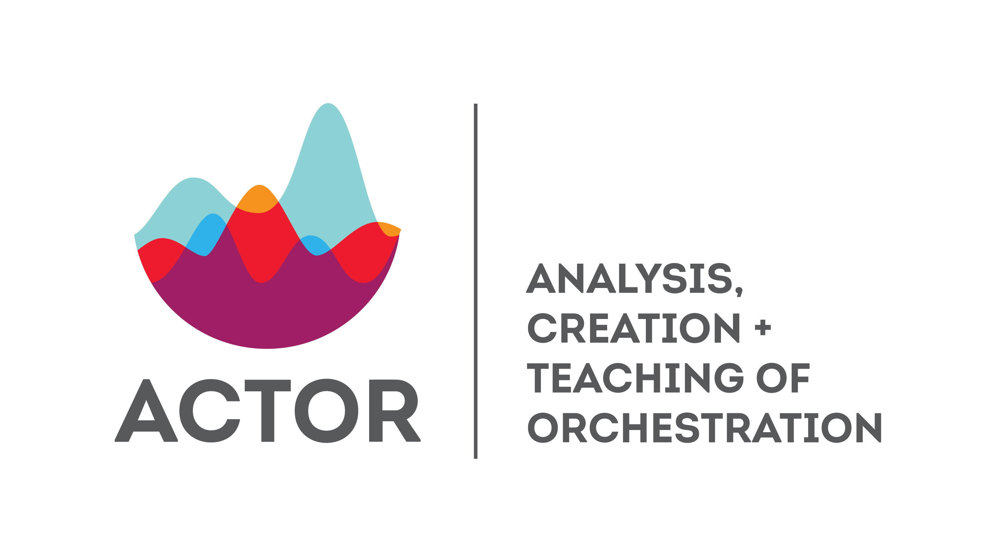
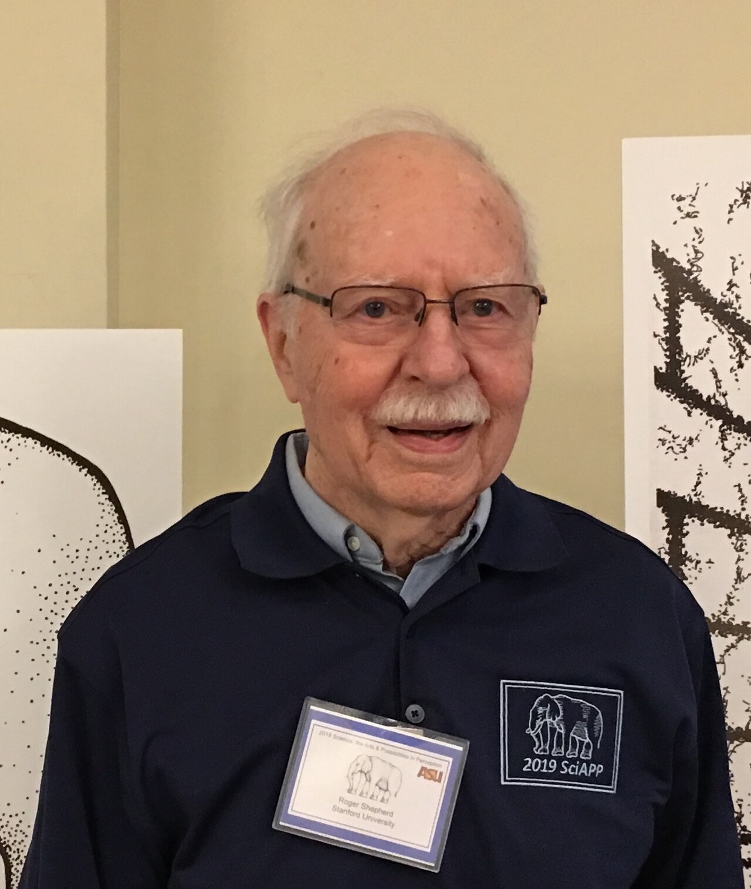
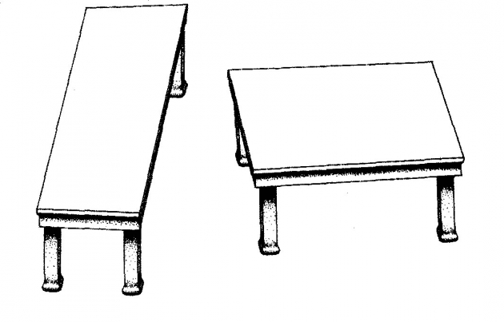
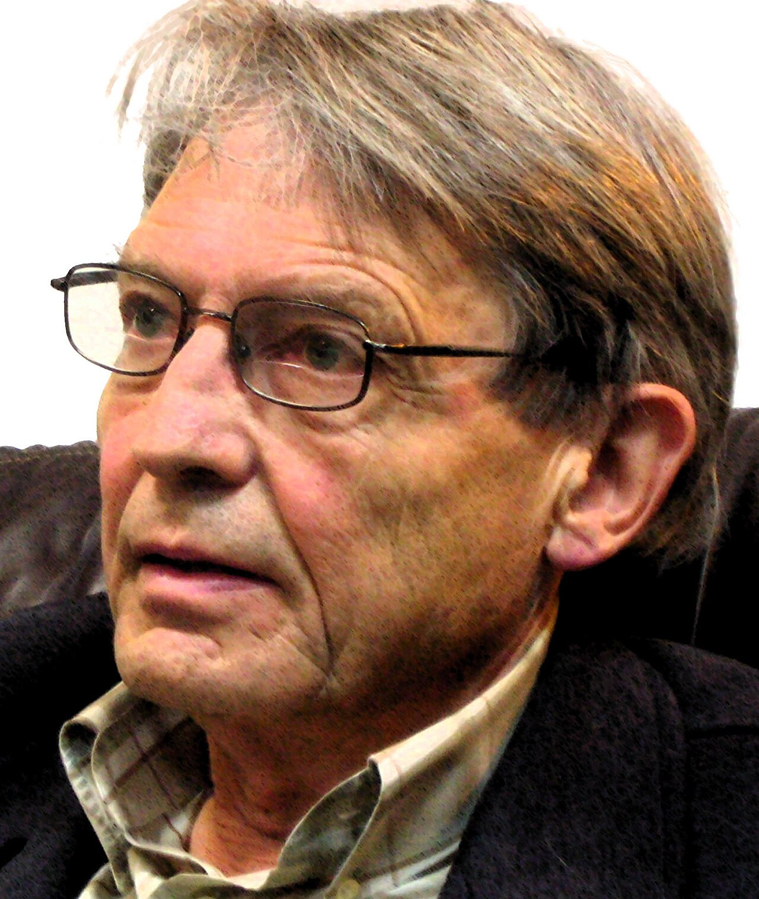

Endless Ascent: The Shepard Tone in Notation
Building the Shepard illusion from scratch, one voice at a time...
Dr. Louis Goldford — November 16, 2026


source: Wikimedia Commons, “Psychologist Roger Shepard March 2019 ASU SciAPP conference” (HouseOfChange, CC BY-SA 4.0)

source: Wikimedia Commons, “Table shepard.preview” (Nedelina Ksenia, CC BY-SA 4.0), after Roger Shepard, Mind Sights (1990)
source: Peter Prevos, “Shepard tables”

source: Wikimedia Commons, “Jean-Claude Risset au StuStu (cropped)” (Leedanslabrousse, CC BY-SA 4.0)
source: monotoniac, “Jean-Claude Risset - Mutations (1969) (Spectrogram)”, from 5:28
source: Matthew Crisp, “Risset Rhythm”
source: Fabien Lévy, “Functional Orchestration: A Research Field at the Beginning of Its History,” The Oxford Handbook of Orchestration Studies, ch. 8, pp. 225, 229
example: 1 voice, semitones, 1 cycle
example: 2 voices, semitones, 1 cycle
example: 4 voices, semitones, 1 cycle
example: 4 voices, quarter tones, 1 cycle
example: 4 voices, 8th tones, 1 cycle
example: 4 voices, C pentatonic, 1 cycle
example: 4 voices, C pentatonic, 2 cycles
Thank You!
Questions? Concerns? Complaints?